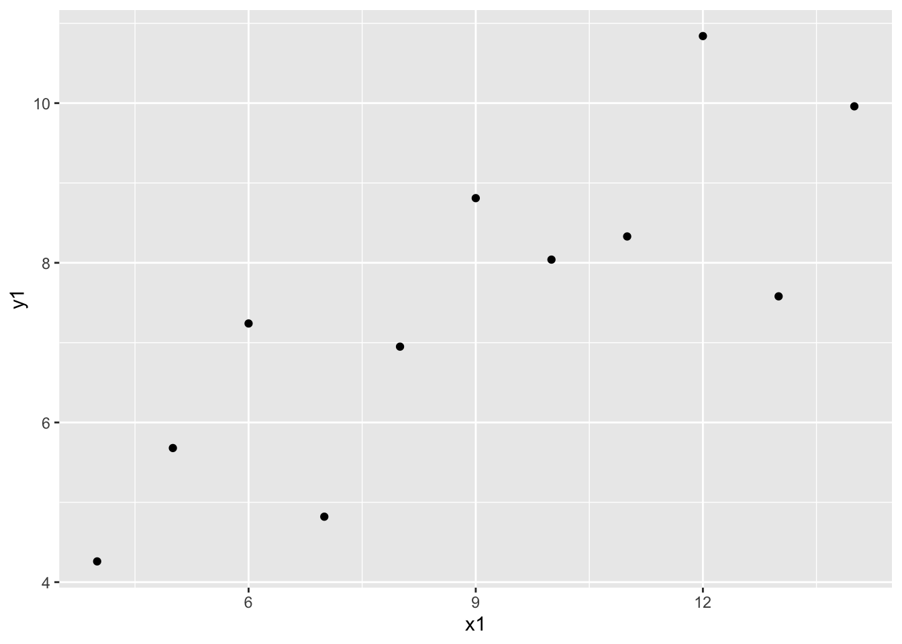

Week 1 Introduction
1.1 What this course isn’t, and is
Is Not:
- statistics (in the way you think)
- general introduction to software engineering
Is:
- data cleaning, data management, and exploratory data analysis
- habituation to some good software engineering practices that are especially valuable for data science work
1.2 Notes on some design decisions
R, not Python
- Python is a perfectly good language for general programming
- And has some advantages over R in certain data science aspects, including working with strings and developing custom data structures
- R is a better language for doing data science
- Vectors, data frames, and common statistical models are installed and loaded by default
- R is more functional
- R is also better for beginners
- CRAN
- RStudio
Scripts, not notebooks
1.3 Let’s get started with RStudio
- Quick tour of RStudio’s UI
- Let’s plot a thing
## x1 x2 x3 x4 y1 y2 y3 y4
## 1 10 10 10 8 8.04 9.14 7.46 6.58
## 2 8 8 8 8 6.95 8.14 6.77 5.76
## 3 13 13 13 8 7.58 8.74 12.74 7.71
## 4 9 9 9 8 8.81 8.77 7.11 8.84
## 5 11 11 11 8 8.33 9.26 7.81 8.47
## 6 14 14 14 8 9.96 8.10 8.84 7.04
## 7 6 6 6 8 7.24 6.13 6.08 5.25
## 8 4 4 4 19 4.26 3.10 5.39 12.50
## 9 12 12 12 8 10.84 9.13 8.15 5.56
## 10 7 7 7 8 4.82 7.26 6.42 7.91
## 11 5 5 5 8 5.68 4.74 5.73 6.89## 'data.frame': 11 obs. of 8 variables:
## $ x1: num 10 8 13 9 11 14 6 4 12 7 ...
## $ x2: num 10 8 13 9 11 14 6 4 12 7 ...
## $ x3: num 10 8 13 9 11 14 6 4 12 7 ...
## $ x4: num 8 8 8 8 8 8 8 19 8 8 ...
## $ y1: num 8.04 6.95 7.58 8.81 8.33 ...
## $ y2: num 9.14 8.14 8.74 8.77 9.26 8.1 6.13 3.1 9.13 7.26 ...
## $ y3: num 7.46 6.77 12.74 7.11 7.81 ...
## $ y4: num 6.58 5.76 7.71 8.84 8.47 7.04 5.25 12.5 5.56 7.91 ...## x1 x2 x3 x4 y1
## Min. : 4.0 Min. : 4.0 Min. : 4.0 Min. : 8 Min. : 4.260
## 1st Qu.: 6.5 1st Qu.: 6.5 1st Qu.: 6.5 1st Qu.: 8 1st Qu.: 6.315
## Median : 9.0 Median : 9.0 Median : 9.0 Median : 8 Median : 7.580
## Mean : 9.0 Mean : 9.0 Mean : 9.0 Mean : 9 Mean : 7.501
## 3rd Qu.:11.5 3rd Qu.:11.5 3rd Qu.:11.5 3rd Qu.: 8 3rd Qu.: 8.570
## Max. :14.0 Max. :14.0 Max. :14.0 Max. :19 Max. :10.840
## y2 y3 y4
## Min. :3.100 Min. : 5.39 Min. : 5.250
## 1st Qu.:6.695 1st Qu.: 6.25 1st Qu.: 6.170
## Median :8.140 Median : 7.11 Median : 7.040
## Mean :7.501 Mean : 7.50 Mean : 7.501
## 3rd Qu.:8.950 3rd Qu.: 7.98 3rd Qu.: 8.190
## Max. :9.260 Max. :12.74 Max. :12.500
Exercise: plot the other three datasets
## [1] 10 8 13 9 11 14 6 4 12 7 5## [1] 10 8 13 9 11 14 6 4 12 7 5## [1] 10 8 13 9 11 14 6 4 12 7 5## [1] 10 8 13 9 11 14 6 4 12 7 5## [1] 9## [1] 9## [1] 2.031568## [1] 2.031657## [1] 0.8164205Exercise: Calculate correlations for all four x-y pairs
- Some idiosyncracies of my code
'rather than"##for documentation comment=not<-for assignment
- Essential Global Options
- Never save .Rdata, load workspace
- Super useful custom keyboard commands:
- Tools \(\to\) Modify Keyboard Shortcuts…
- ⌘+1, ⌘+2, ⌘+3
1.4 Base R data types
1.4.1 Numerics
## [1] 0.6666667## [1] Inf1.4.2 Vectors
## [1] 3## [1] 3 4## Error in foo[1, 3] : incorrect number of dimensions## [1] 2 4## [1] 7 9 11## [1] 10 18 28## [1] TRUE TRUE TRUE## [1] TRUE## [1] 2 3 4 5 6 71.4.3 Strings
## Error in foo + bar : non-numeric argument to binary operator## [1] "monkey" "banana" "house"## [1] "monkey house" "banana house"## [1] "monkeyhouse" "bananahouse"1.4.4 Factors
## Warning: NAs introduced by coercion## [1] NA NA NA NA## Warning: NAs introduced by coercion## [1] NA NA## [1] "bar" "foo" "zoo"1.4.5 Lists
[todo]
1.4.6 Data frames
[todo]
1.4.7 [examining variables]
- length
- str
- class, typeof
- challenge
1.4.8 [Missing data]
https://gge-ucd.github.io/R-DAVIS/lesson_how_r_thinks_about_data.html#missing_data